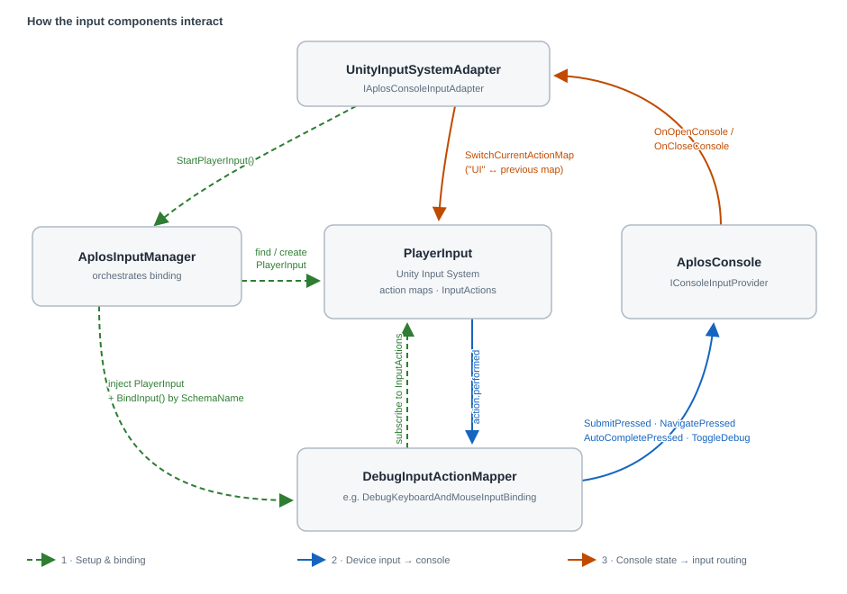
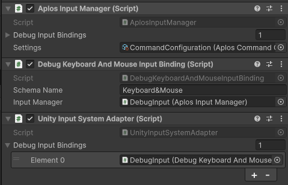
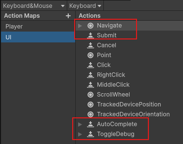

Setting up Input
A guide to wiring device input into Aplos Console and configuring the components that drive it.
How it works
An overview of the input components and how they communicate with one another.
Aplos Console keeps input handling deliberately decoupled: Unity's Input System supplies the raw actions, a thin set of Aplos components translate those actions into console calls, and the console never needs to know which device or control scheme produced them. Four pieces do the work:
AplosInputManager— orchestrates set-up. It finds (or spawns) aPlayerInput, resolves the active control scheme, and binds the matching mapper.DebugInputActionMapper— one per control scheme (the built-inDebugKeyboardAndMouseInputBindingcovers keyboard & mouse). It subscribes to the relevantInputActions and forwards each to the console.AplosConsole— implementsIConsoleInputProvider, the contract the mapper calls into, and raises open/close events.UnityInputSystemAdapter— anIAplosConsoleInputAdapterthat reacts to those open/close events and reroutes which input map is active.

The components communicate along three distinct flows:
-
Set-up & binding. On
Start, theUnityInputSystemAdaptercallsAplosInputManager.StartPlayerInput(). The manager locates aPlayerInputin the scene — or instantiates the fallbackPlayerInputPrefabwhen none exists — resolves the active control scheme, injects thatPlayerInputinto everyDebugInputActionMapper, and callsBindInput()on the one whoseSchemaNamematches. That mapper subscribes its callbacks to the relevantInputActions. -
Device input → console. When the player triggers an action, the Input System fires
InputAction.performed. The bound mapper's callback forwards it to the console throughIConsoleInputProvider—SubmitPressed,NavigatePressed,AutoCompletePressed, orToggleDebug— so the console reacts without any direct dependency on the input device. -
Console state → input routing. When the console opens or closes it raises
OnOpenConsole/OnCloseConsole. TheUnityInputSystemAdapterlistens for these and callsPlayerInput.SwitchCurrentActionMap, switching to the"UI"map while the console is open and restoring the previous gameplay map when it closes, so console typing and game controls never fight over the same input.
Because each seam is an interface, any part can be swapped: implement
IAplosConsoleInputAdapter (or derive from
AplosConsoleInputAdapterBase) to drive a different input
system, and add a DebugInputActionMapper per control scheme you want to support.
Configuring Input
How to set the input components up in a scene.
- Add an
AplosInputManagercomponent to a GameObject, and put an input adapter — the built-inUnityInputSystemAdapter— on the same GameObject. OnAwakethe manager resolves its adapter withGetComponent<IAplosConsoleInputAdapter>(), so the two must share a GameObject. - Add a
DebugInputActionMapperfor each control scheme you support (useDebugKeyboardAndMouseInputBindingfor keyboard & mouse), and list them in the manager's Debug Input Bindings field. - Set each mapper's
SchemaNameto exactly match a control scheme name in your Input Actions asset. The manager binds the mapper whoseSchemaNamematches the active scheme; if none matches, a warning is logged and no input is bound. - Assign your
AplosCommandConfigurationasset to the manager's Settings field. ItsPlayerInputPrefabis instantiated as a fallbackPlayerInputwhen the scene has none of its own.

- In your Input Actions asset, define the actions the console listens for —
Submit,Navigate,AutoComplete, andToggleDebug— and a"UI"action map for the console to switch to while its open.

- (Optional) To integrate a different input system, derive from
AplosConsoleInputAdapterBaseand implement a matchingDebugInputActionMapperrather than using the Unity Input System defaults. - (Optional) Add a
ConsoleCursorHandlercomponent to a GameObject in the scene to let the console manage the cursor. It listens for the console's open/close events, freeing and showing the cursor while the console is open and restoring the game's previous cursor state on close. Omit it to leave the cursor entirely under game control.